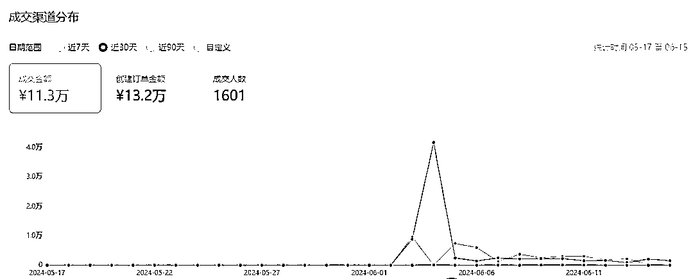
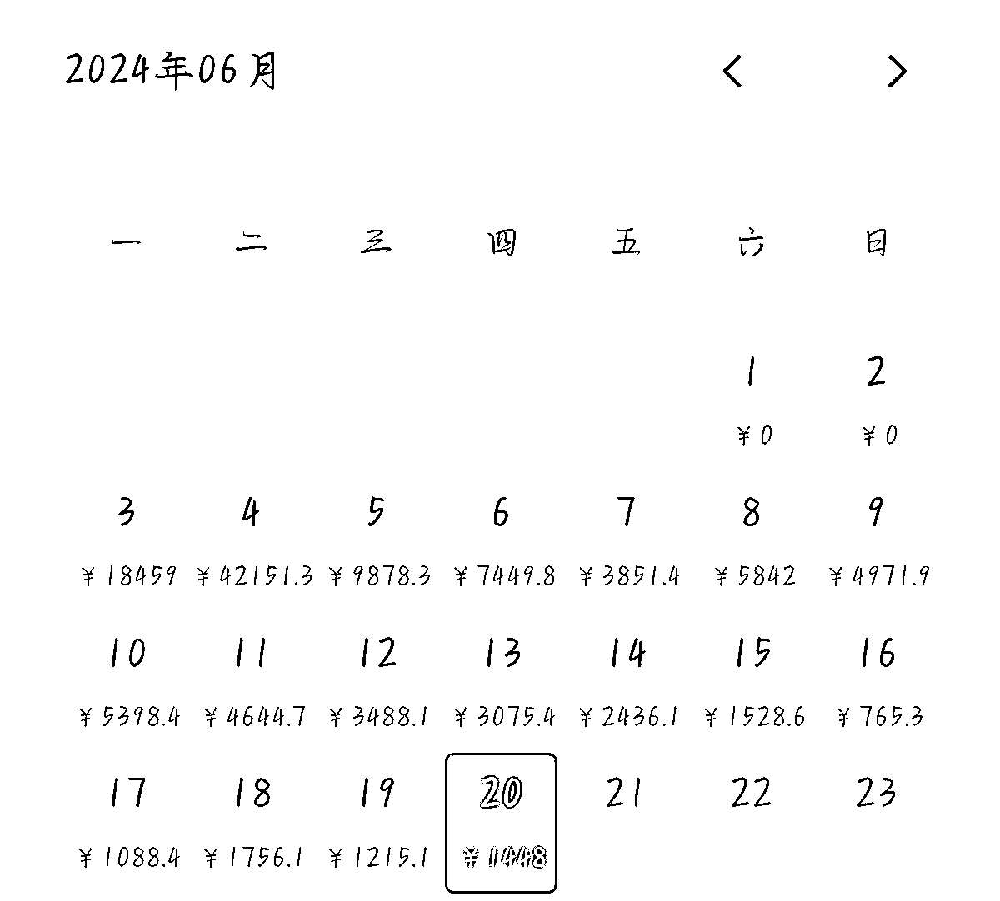
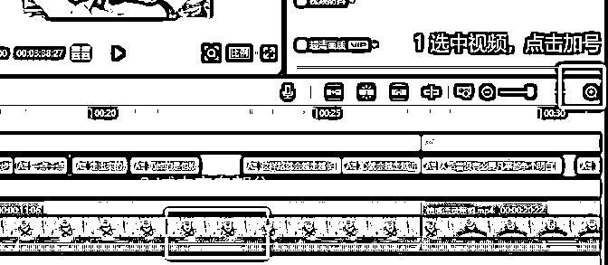
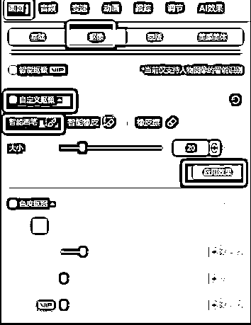
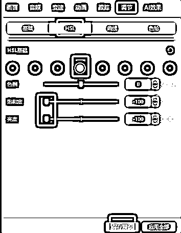

来源：https://bw54wz1lzj.feishu.cn/docx/SdZadGBu1oVjK2xZmruc5bKgnMe
大家好我是式钦，一个在副业路上折腾两年做过十几个项目但没啥大收入的圈友，终于在这次 5 月口播带货航海算是有了一个很大的收获，在这次口播航海项目我是从5月16号开始拍摄和发布第一个口播视频，一直到6月3号才有一条视频起飞，截止到6.20号总GMV 10万+，长尾流量十分的充足，虽然后续流量不多了，但是也在缓慢的出单，具体数据如下：


新人第一次发帖，如有不妥请直接和我说，感谢。很多东西在五月口播航海手册里面讲的都十分详细，我就不在重复造轮子了，这篇复盘贴主要讲一下我第一个爆款视频的复盘，还有我在这整个过程中注意到的一点小细节，最后就是我的心路历程，希望给大家能有一点点的帮助，哪怕是一两句话有启发就很好了。
我前面十几天基本都是按照文案库进行拍摄和分发，也就是一个品拍三个文案，然后分发三个账号，一开始视频流量不怎么样，都不超过1000，但是随着视频越发越多，整个账号的流量也在缓慢的增加。
我总共拍了厨师，维修工，洗衣店老板，读书人几个形象，大致筛选看出厨师的流量稍微高一点，所以后续可以继续往厨师方向多拍拍。
拍完素材库里面几个品之后我都没有出单，于是我就自己开始找对标素材。首先我是在视频广场搜小炒酱这个品，刷到口播视频就看完之后点赞，然后再继续刷，大概第二天的时候我的账号推荐的基本上都是口播视频了，然后我就开始找对标。
找对标我首先看视频是否容易复制，再看点赞量和分享量，如果都比较高再看发布时间，还有一个是是否正在直播卖货。
按照这个标准我找了好几个对标视频，我发现很多爆的视频其实拍起来很简单，有的甚至是就随便找了个地方怼脸拍也能很爆，所以口播视频和文案有很大区别。
我找到几个对标视频之后，就开始提取文案开始拍。其中我爆的那个视频是一个燕麦片的品，整体的文案是讲减肥的，就是通过用燕麦片代替主食进行减肥，我觉得文案挺符合厨师的，于是我就适当改编了一下，加入了厨师身份，
“很多人问我当厨师怎么还不胖，是不是做的菜不好吃，我说不是的，因为我找到了方法”。
让整个文案更有说服力，并且因为这个文案有一个效果对比，所以我采用的是高兴的情绪，让观众能够看到我是发自内心的高兴，然后拍摄了这个视频并定时早上四点半发布。
早上五点多起来发现视频流量已经几千播放了，并且没几秒刷新一下浏览量都涨很多，我就立刻开播并且联系了代播，基本上没有跑飞流量，
这中间我也请假了一天，隔一段时间就观察一下直播的数据，然后同样的文案在不同角度以及手上拿着不同东西拍了好几个视频进行补发引流，当天最高的视频跑到了10万+，直播也有一万的GMV。
在直播的时候我们自己不需要干很多，基本上就是拍视频及时补视频，后面这个视频跑到了126w，被点了。
市面上有很多团队会做抠像，我在广场上刷到了有人做我的抠像，我就去联系了他们，基本上很好交流，按照市场的规矩会给出境人10%的分成，这中间有个人有团队，也产生了一些收益。
当然也可以主动去联系抠像团队，扩大收益，算是一个躺赚收益。同时我继续将这个视频进行租号发布，租了三个号，有一个号爆了10万+，GMV也有7000+，收益还是不错了，后面怕违规率就没有继续干了。



这一部分其实还是很建议做了很久的项目但是没有收益或者收益比较少的圈友们好好看一下，因为在这个项目之前我也和你们一样，透明，小白，低收益，迷茫等等。
之前的我每天都会刷各种帖子，最开始是越刷越焦虑，大家都这么优秀，我怎么还是一事无成，帖子刷的多了你就会发现，有一个共同点大家都会提到，那就是下场干，不干你永远不会成功。
于是我开始了第一个项目，闲鱼无货源项目，当时真是初生牛犊不怕虎，很多信息还没有弄明白，我就直接按照帖子的方法去找对标了，根据浏览量和想要数的比例找了几个对标，然后就直接发布了。
有一个品爆了，各种书籍的pdf版本，很多人来问，每天基本上都是在手机回复信息，但是一单只能赚几毛钱到一块钱不等，然后号就被封了，原因是盗版违规。
我又申请了一个号，开始做高客单价的产品，找到了一个对标的品是长颈鹿椅子，一单129，可以赚29元，但是好景不长，这个品后续就没有流量了，又继续做了一个月也没有起色，我就放弃了。
现在想想其实继续坚持下去，每天上下班通勤时间找找对标发布，后面应该也能起来，可惜当时没有现在这个坚持的心态。
这个项目主要失败有两个原因，一个是手上的账号不多，一旦有违规就很容易陷入停滞，极大打击信心，另外一个就是没有继续坚持做下去，没有一个正确的心态，闲鱼这个项目也是一个选品拼概率的问题，长期干下去也会有很好的收益。
中间我又做了一些项目，像抖音练字项目，视频号混剪带货，视频号创作者分成计划，多多视频带货，京东短视频带货，百家号视频，红包封面项目，爱心代码项目等等，大部分都是花了大量时间做了很久但是没有收益或者只有很少的收益。
现在经历了这么多，其实如果回到当时，我相信我很多项目可以做的更好，多条路子走下去，并且也能够坚持下去。就像闲鱼项目，每天花十几分钟就可以完成3-4个品的上架，堆数量，爆品之后找人一起回复，也能节约自己的 时间。
这个项目的起因应该是在风向标看到星火内容创作大师可以自己根据热点话题直接生成文章并且可以插入图片同步到头条、百家号、公众号。然后我想我是不是可以通过影刀+星火内容创作大师直接制作一个自动发文的RPA。
我就在星球找RPA的教程以及官网的教程学习并制作了第一个RPA发文机器人，每天坚持发以及微调文章，两多个月总共发了245篇文章，有一篇爆了赚到了200多元。目前这个项目也在做，基本上是每天定时发布。
这个项目能够成功，主要原因在于前期准备充分，学习RPA写了一个自动发文的机器人，后续每天基本不用花太多时间就能出很多篇当下的热点文章，所以能够在无收益的前期可以一直坚持下去，后面有文章爆也是必然的结果。
这次正反馈给予了我极大的信心，让我相信很多有成功案例的项目只要坚持下去基本都能获得收益，只是多少的问题，这个项目后续可以继续找人一起发，账号多，概率也更大，而且文章也是不重复的。
同时在这个时候我也看到一段话，说是做一个项目之后，你要设定一个目标，比如发100个视频，100篇文章等，如果还没有收益才能判断合不合适，需不需要继续做，否则一切都是空谈。这也是我后面做项目的准则。
正是这些宝贵的项目经验以及不断的自我鸡汤式洗脑，所以我的心态相对来说好一点，做视频号口播项目的时候，我第一时间不管三七二十一，既然报名了就开干，也不想以后会怎样，就直接拍直接发，所以在很多人还没开始的时候我已经发了人生中第一条口播视频，当然不出所料的毫无动静。。。。。
中间也有人在群里报喜，我依然还是会焦虑，但是我给自己设定了一个目标，拍够100个视频还没出单再放弃，因为这条赛道教练和生财的圈友们已经证明了是可行的，如果100条视频发多个账号测试没有测试出来，只能说明是我自己不适合这个赛道。
结合之前的经历与收获，也正如晓文教练所说：新手入局，别一直盯着结果来看，而是多琢磨自己动作有没有做到位，执行量有没有足够多。
所以我后面十几天里面一直坚持发坚持拍，并且在这个过程中不断看航海手册、教练的直播、群消息有用的地方，不断去优化自己的视频，优化自己拍摄的技巧，优化自己的表情，优化口播的流畅度。
终于我在第19天早上五点多照常爬起来看看数据咋样再睡的时候发现爆了一条视频，一条其实我并不抱有希望的视频，反而我抱有希望觉得会火的视频依旧稳如老狗一样没有流量（任何项目都充满随机性，准备好了才能接住）。
然后我当场直接就找了代播，因为我觉得我没有这个直播的水平，这波流量来了，代播再不行也比我这个新人好一些，然后急急忙忙找代播，用手机开播连麦，中间整个心情都是很激动的。
到八点半的时候快要上班了，我想着今天这个视频爆的太突然了，我都没有多拍视频，所以直接请假了一天，在白天继续补视频，联系助教扩大收益。这里感谢助教三月，给了我很多指导。
6.3号从早上一直直播到了晚上7点多的时候，视频号违规了（不是视频违规），我的账号限流了，直播间已经不进人了，观察了一会之后让代播下播，我的直播间暂停了直播。
然后拍了十条老人言进行申诉，一直到晚上8:30还没有申诉通过，我想着晚上还没吃饭，待在房间里面一天了，就想着出门走走，然后做了一个我最后悔的决定。
我看这么久直播间没进人，也没有申诉通过，就关闭了直播，然后吃完饭回来发现申诉通过了，视频流量又继续爆了，然后我傻眼了，开不了播了（6.3和6.4系统维护了，开播的可以一直播），当时不知道搞了一个多小时也没解决好，就随他去了，我就继续拍了一下后面可以补的视频，希望后面开播了可以里面接住。
6.4号，依旧不能开播，那个爆的视频当天从十万+播放直接涨到80万+播放，橱窗出单四万多，如果直播的话最少翻倍的GMV，心态开始有点爆炸，因为我觉得我亏钱了哈哈哈哈哈。
还好在三月助教和朋友的宽慰下，我也缓过来了，毕竟本来就是赚的钱，能赚多少是多少，不能太贪心，然后心态缓和之后我就想到了可以先挂个直播预约，6.5号能够开播了也算挽留了一点流量。但是因为心态没有第一时间开预约，所以算是跑飞了很多流量。
当你视频爆发之后，你会发现你前面拍的视频不仅仅是帮你锻炼了你的口播能力和心态，同时他们的流量也会被带动起来，也会出单，所以一切都是值得的，都不是无用之功。如果再重来一遍，无论要干啥都要暂停播满24h，尽可能的减少一些错误。
也正是不断的去实践，才能发现问题，才能不断解决问题，在整个过程中收获的往往不是纸面上的那些数据，是更深的东西，这会让我们以后做任何项目都不虚不慌。
心态还是心态，我们要尽量保持一个平稳的心态去思考，但要怀着激情去做事，这样才能走的更远更久。
这一次经历，让我更加明白心态的重要性，因为很多时候因为心态就放弃了，那其实会错过很多可能的机会，当一个项目已经有很多人走通了，我们一定要相信这个赛道是可行的，剩下的就是我们自己的执行力和优化，当到一定量的时候才能说这个赛道不适合自己，而不是赛道不行。
好像写着写着就是鸡汤了，但是这都是我自己的亲身经历，一个才有一点成绩的新人这一路的经验，希望你能够坚持下去。
如果感到焦虑感到迷茫，就给自己设置一个自己能够可控的目标，比如我要拍多少视频，我要写多少天的文章等等这些，而不是赚多少钱这种不可控的目标，一步一个脚印，每天对比一下前一天是否有一丁点的进步，不断走到你的目标面前，再去考虑要不要继续走下去，否则一切都是空谈。
干就完了，以后的事情以后再考虑，等你走通了流程，赚的多了再去考虑放大，考虑违规率，现在就跟着航海手册跟着教练去做就可以了。加油！
通过这次口播航海项目，我真正意义上实现了副业的大幅收入，也算是有一点点小成绩，可以继续深耕下去。希望以后能够继续保持下去。
在整个过程中，我十分感谢三月助教在视频爆发之后的无论任何时间都给我打电话指导，让我在后面整个流程当中并没有很多慌乱。
感谢郭晓文教练和李超鹏教练给我指出了后续的方向以及连麦复盘指导，让我从这段经历中能够收获更多，也加大了后续继续走下去的信心。
感谢小六六提供的文章指导，让我这个第一次写帖子的小白有了方向去写出这篇帖子，并且在内容上给予了很多指导和修改意见。
感谢生财航海运营和领队志愿者等人的付出，让我可以不去想太多东西，只需要跟着航海手册去干就可以了，很多东西甚至文案手册里面都写的明明白白，完全不需要做很多动作。
最后在这里强烈建议大家积极报名7月航海特辑，参与到这个视频号口播赛道中来，在航海中我们可以不用考虑任何事，只需要拿着文案和对标视频拍就可以了，饭都喂到嘴边了你不打算张口细细品尝一下吗？希望我们能够在七月航海特辑中天天爆单，7月5号也就是明天开始报名，大家多多关注报名时间，拼手速的时候到了~